SQL Server 2016 VS MySQL
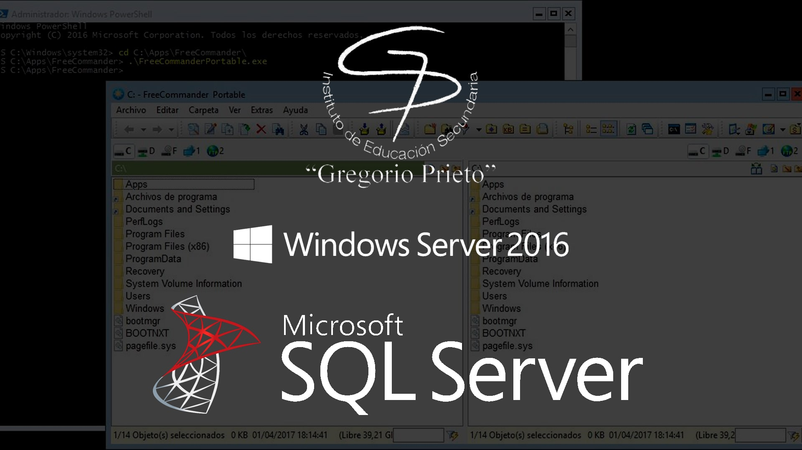1. Introducción
1.1. Presentación
En esta elaboración de mi proyecto trato de averiguar y saber si ofrece las mismas ventajas el software comercial con software gratuito y/o libre. En este proyecto he elaborado un servidor de base de datos con el software SQL Server 2016 de Microsoft en un sistema operativo Windows Server 2016. Trataré, sobre todo, lo fundamental de lo que aprendido sobre este curso con MySQL en sistemas de Microsoft. También pondré otros servicios en el servidor como IIS (servidor web), DNS y Active Directory.
1.2. Objetivos
Mis objetivos sobre este proyecto es averiguar las ventajas y desventajas sobre un software comercial, como en este caso SQL Server 2016 respecto a MySQL. También ver qué diferencias hay entre usar un Sistema de Gestor de Base de Datos distinto a MySQL, tanto al visualizar y crear tablas, funciones, procedimientos, cursores, disparadores, etc… También veremos diferencias entre usar PHP con SQL Server respecto a MySQL.
1.3. Motivaciones
Mis motivaciones en este proyecto es aprender cosas nuevas y he elegido Windows Server en modo Core porque, se supone, que será el futuro de Windows Server, no tendrá una GUI y me gustaría aprender PowerShell, si es de verdad un buen sistema de comandos y de scripts, ya que está orientado a objetos, muy diferente al modo comando del CMD, que se va a reemplazar por PowerShell.
Respecto a SQL Server por que ofrece algunas cosas útiles que llevan otro gestor de base de datos y ver si es más fácil aprender con SQL Server que con MySQL. También por dejar de lado, de momento, usar software libre para aprender cosas y en entornos empresariales de trabajo usan software comercial que software libre.
2. Planificación
La planificación del proyecto consistirá en un servidor con Windows Server 2016 sin GUI que contendrá unos servicios de DNS, Active Directory, IIS (servicio web) y SQL Server 2016 (servidor de base de datos).
Después estarán tres clientes Windows 10, que iniciarán con sus usuarios de Active Directory y podrán utilizar la herramienta SQLCMD para conectarse con SQL Server.
En la base de datos de SQL Server contendrá solamente una base de datos. Se trata de una inmobiliaria.
Se trata del proyecto de IAW de PHP que hice anteriormente. Aquí mostraré el uso de PHP para que se conecte a SQL Server y mostrar, actualizar, crear y borrar datos de la base de datos de SQL Server y ver cuantas diferencias hay entre MySQL. También contendrá funciones, procedimientos, cursores… creados anteriormente en el proyecto ASGBD y ver las diferencias.
3. Requisitos previos
Los requisitos previos que debemos tener es el disco de instalación de Windows Server 2016 y el disco de instalación de SQL Server 2016 para el servidor, el disco de instalación de Windows 10 Pro para los clientes, in contar que se realizará en máquinas virtuales VMware.
4. Plan del contenido
Instalar Windows Server 2016 Standard sin entorno gráfico e instalar servicios básicos, como Active Directory, DNS, Servicio Web, etc…
5. Diagrama de la base de datos
Aquí está reflejado el dibujo de la base de datos y su modelo relacional. Se explicará más delante de que consiste la base de datos.
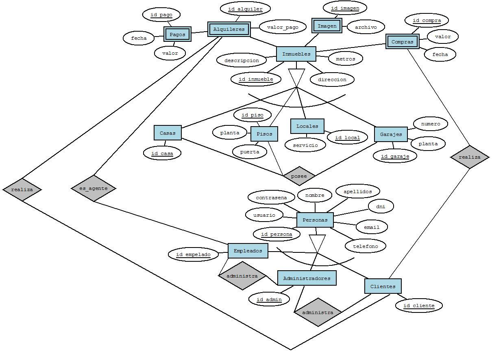6. Servidor Windows Server 2016
Dicho antes, el servidor será Windows sin entorno gráfico, administrado con la consola de comandos CMD y con PowerShell. Se verá la instalación, la configuración dada para este servidor y la configuración de las copias de seguridad.
6.1. Instalación de Windows Server 2016
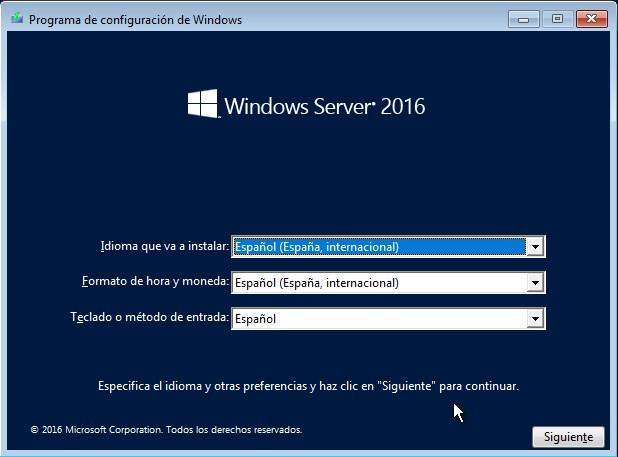Seleccionamos el Idioma español y método de teclado de entrado en español.
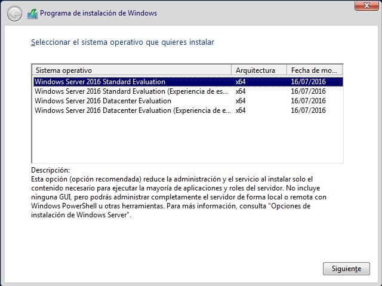Seleccionamos la opción Windows Server 2016 Standard, que es la opción sin entorno de escritorio. No necesitamos el Datacenter ya que no vamos a virtualizar nada en este proyecto.
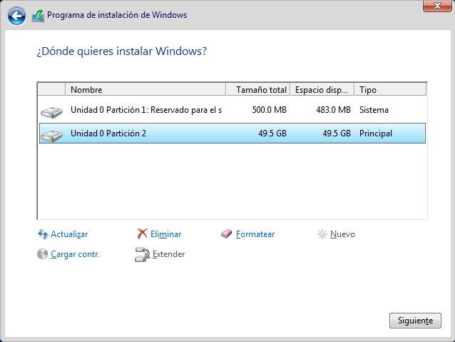Creamos una partición solamente para el sistema operativo. Después les agregaremos discos para temas de copia de seguridad.
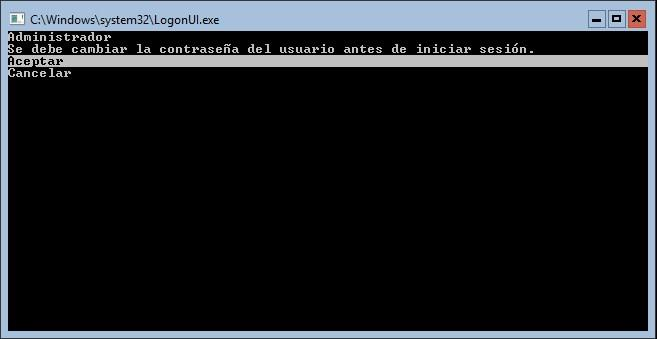Una vez instalado el sistema, se reiniciará y veremos una ventana tipo cmd. Nos pedirá agregar una contraseña al usuario Administrador, le damos en Aceptar.
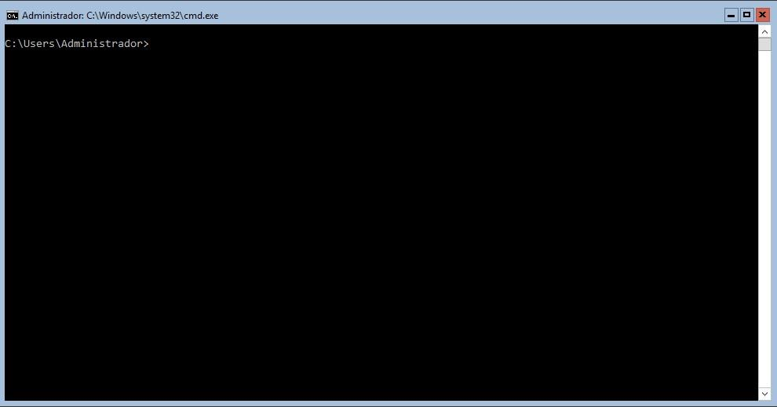Y tenemos el Windows Server 2016 Core iniciado. Siempre se iniciará con una ventana de cmd.
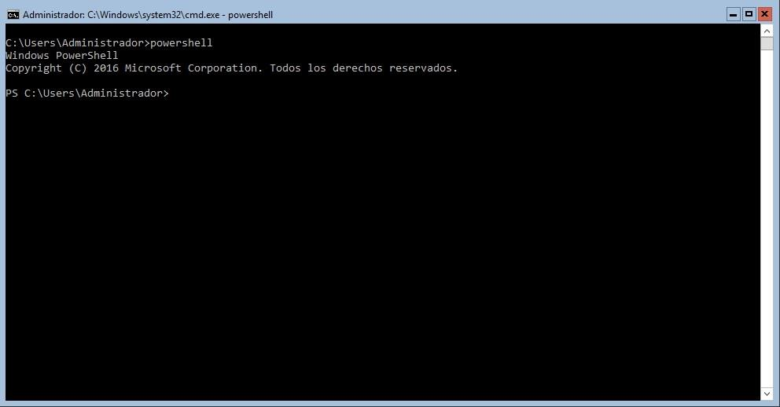Para iniciar Windows PowerShell podemos iniciar de tres formas diferentes.
- Escribiendo powershell dentro del cmd para iniciar PowerShell dentro de la misma consola cmd.
- Escribiendo start powershell dentro del cmd para iniciar PowerShell en una ventana nueva.
- Abriendo el Administrador de tareas con Ctrl + Shift + Esc. Archivo Nueva Tarea y escribir powershell.
6.2. Configuración de Windows Server 2016
Creación de un Minshell para Windows server 2016 Core (Opcional).
Una de las cosas que tenía Windows Server 2012 R2 era que podías abrir el explorador de archivos, el Internet Explorer y el Administrador del servidor estando en modo Core. Ahora esto se ha eliminado, cosa que no han gustado a algunos administradores de sistemas, crearé yo mismo mi propio Minshell.
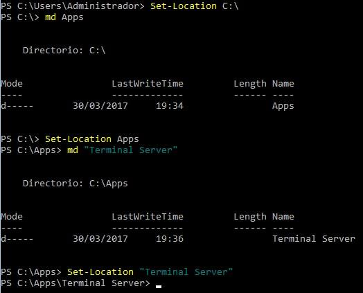Nos desplazamos a la raíz de C: y creamos una Carpeta llamada Apps. Creamos una carpeta llamada terminal Server que guardará la aplicación de escritorio remoto.
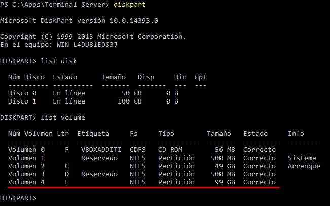Vamos a montar un disco que tiene Windows Server 2016 con entorno gráfico en nuestro Windows Server Core. Para ello usamos diskpart. Listamos los discos con list disk y listamos los volúmenes con list volume. Vemos que se ha montado automáticamente la partición E: con 100 GB.
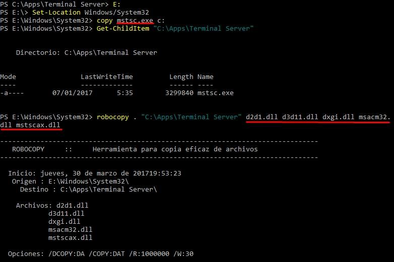Salimos del diskpart y nos movemos a la unidad de disco E:\Windows\system32. Copiamos la aplicación mstsc.exe a la unidad C: Para hacerlo funcionar necesitamos más archivos. Usamos el comando robocopy para copiar más archivos a una partición diferente. Copiamos los archivos que indican en la imagen.
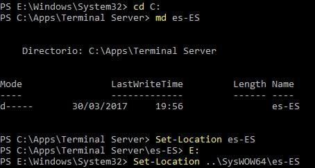Ahora dentro de la carpeta Terminal Server creamos la carpeta es-ES y nos movemos en ella. Ahora nos movemos a la carpeta E:\Windows\SysWOW64\es-ES.
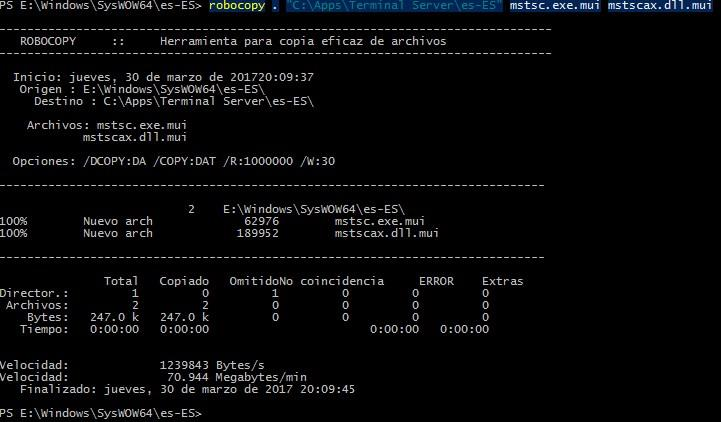Usamos otra vez el comando robocopy para copiar los últimos archivos.
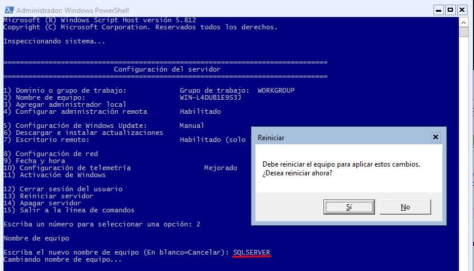Probamos que la aplicación mstsc que la conexión a Escritorio remoto abre correctamente.
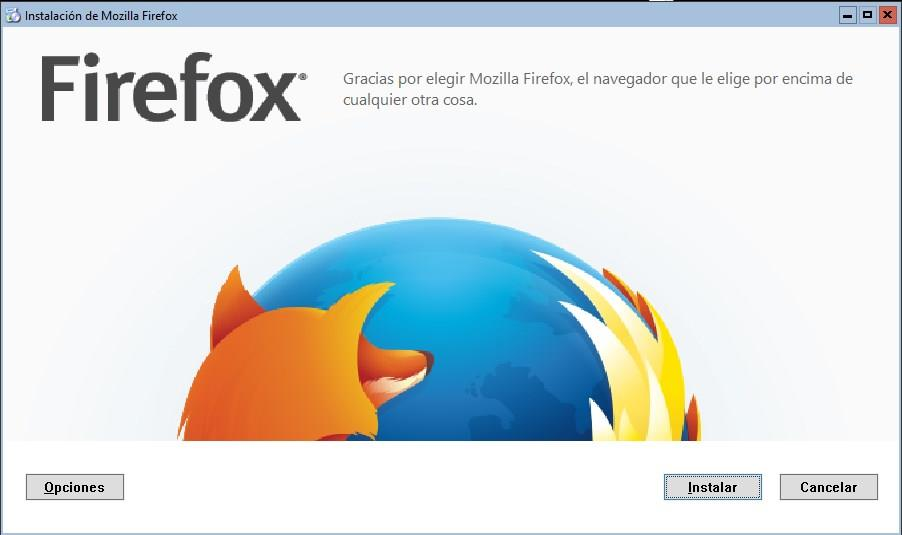Ahora procedemos a instalar Mozilla Firefox. ¿Funcionará?
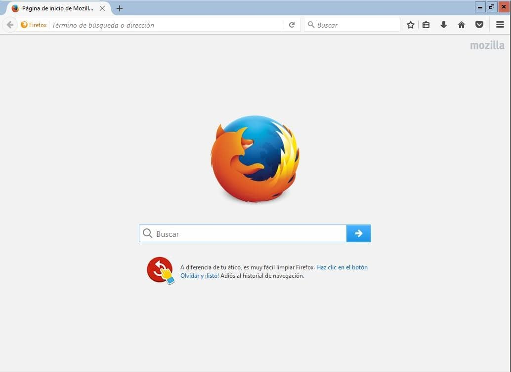Vemos que sí
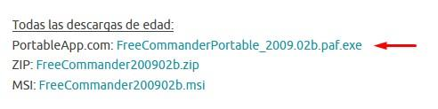Vamos a descargarnos el programa FreeComander desde la página www.freecommander.com. Nos descargamos la versión Portable.
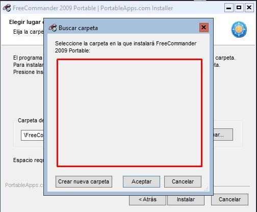Cuando ejecutemos el instalador, al darle a examinar no se podrá ver las carpetas, tendremos que poner la ruta nosotros mismos a mano.
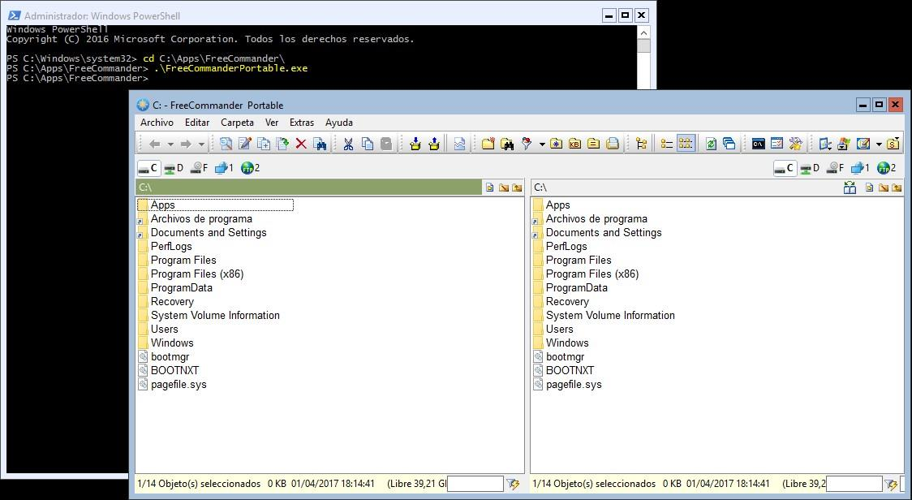Cuando se haya instalado, vemos que al ejecutar el programa tendremos un explorador de archivos con bastantes funciones.
Configuración inicial de Windows Server 2016
Vamos a cambiar el nombre del equipo al servidor. Para ello hay un comando/script llamado sconfig. Cuando lo ejecutemos saldrá bastantes opciones de configuración. Para cambiar el nombre, elegimos la opción 2 y después el nombre del equipo que queremos. Nos pedirá reiniciar para cambiar el nombre del equipo.
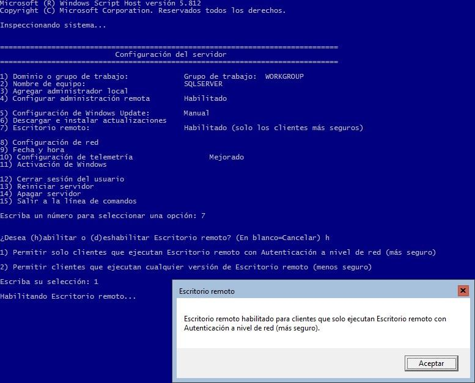Cuando se reinicie, vamos al sconfig otra vez y habilitamos el acceso remoto al servidor. Elegimos la opción 7 y después la opción 1, para que se usen solamente el programa mstsc.exe al conectarse al servidor remotamente y no con herramientas de terceros.
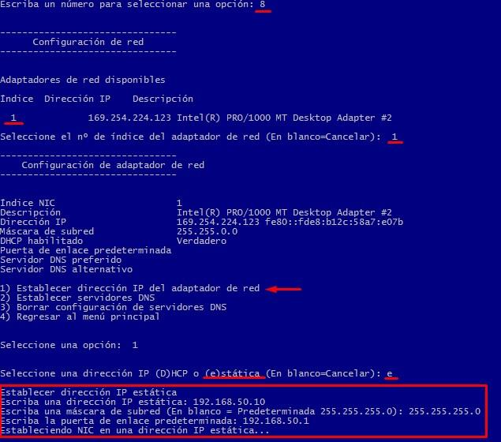Vamos a configurar la tarjeta de red. Elegimos la opción 8. Saldrá las tarjetas de red que tenemos habilitadas. Elegimos la 1 ya que no hay más. Después nos saldrá la información de esa tarjeta de red, como la dirección IP, la máscara de subred, el DNS… Seleccionamos la opción 1 que es de establecer una dirección IP y luego la opción e para asignar una dirección IP estática.
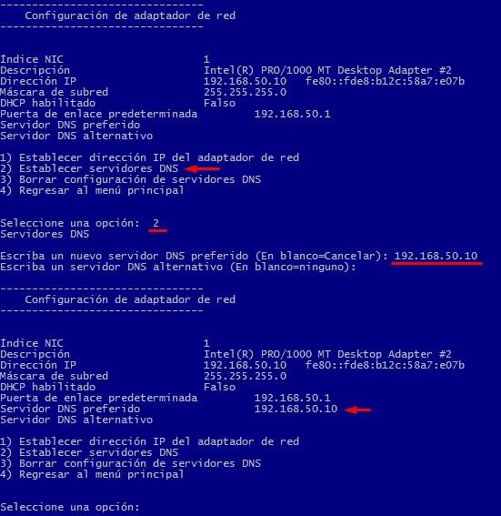Después le damos la opción 2 para poner la dirección DNS primario igual a nuestra dirección IP, ya que este servidor tendrá DNS.
Configuración de Windows Update
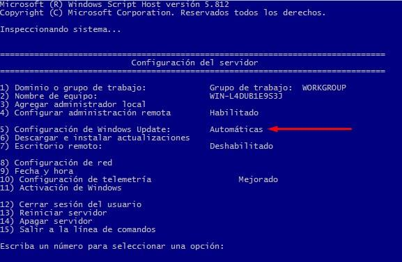Elegimos la opcion 5 para configurar Windows Update. Podemos ponerlo en automáticas, solo descarga o manual.
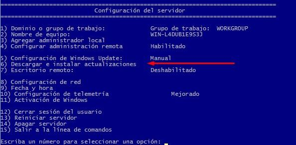Si de alguna manera la tenemos en Manual, para descargar e instalar las actualizaciones de Windows, elegimos la opción 6. Saldrá una ventana.

Seleccionamos la opción r, solamente las recomendadas y cuando termine de buscar actualizaciones seleccionamos la opción a para instalar todas las actualizaciones. Si seleccionamos la opción a para buscar todas las actualizaciones, buscará también actualizaciones para otros productos de Microsoft y drivers para el servidor.
Instalación y configuración de Active Directory y DNS.
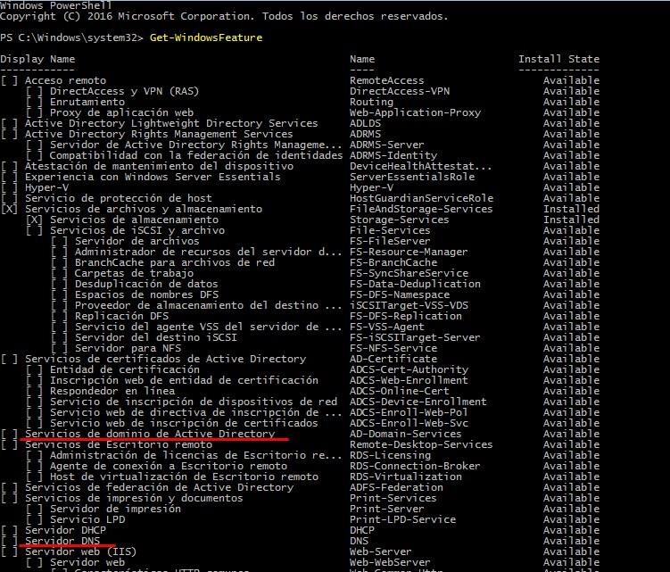En PowerShell usamos el comando Get-WindowsFeature para instalar servicios y características de Windows Server 2016. Queremos instalar los Servicios de dominio de Active Directory (Ad-Domain-Services) y DNS (DNS).
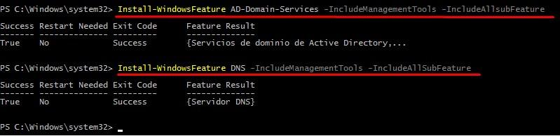Para instalarlos debemos usar el comando Install-WindowsFeature [Name] y opcional, pero recomendable, los parámetros -IncludeManagementTools (para incluir las herramientas de administración de ese servicio) y -IncludeAllSubFeature (para incluir todas las características asociadas de ese servicio que vamos a instalar).
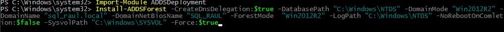Importamos el módulo de configuración para configurar el servicio de Active Directory (Import-Module ADDSDeployment). Es aconsejable poner todo lo que pone en este comando.
Install-ADDSForest
-CreateDnsDelegation valor $true para que cree una zona DNS de delegación para Active Directory o $false para que no cree una zona de delegación para Active Directory.
-DatabasePath “C:\Windows\NTDS”. Es aconsejable poner la ruta por defecto.
-DomainMode “Win2012R2”. Los valores pueden ser los siguientes:
- Win2003 o 2. Modo de Active Directory para compatibilidad desde Windows XP o superior.
- Win2008 o 3. Modo de Active Directory para compatibilidad desde Windows Vista o superior.
- Win2008R2 o 4. Modo de Active Directory para compatibilidad desde Windows 7 o superior.
- Win2012 o 5. Modo de Active Directory para compatibilidad desde Windows 8 o superior.
- Win2012R2 o 6. Modo de Active Directory para compatibilidad desde Windows 8.1 o superior.
- Win2016 o 7. Modo de Active Directory para compatibilidad desde Windows 10 o superior.
-DomainName “sql_raul.local”. Nombre del dominio que queremos.
-DomainNetBiosName -> “SQL_RAUL”. Nombre de NetBIOS.
-ForestMode -> “Wn2012R2”. Los valores pueden ser los siguientes:
- Win2003 o 2. Modo de Active Directory para compatibilidad desde Windows XP o superior.
- Win2008 o 3. Modo de Active Directory para compatibilidad desde Windows Vista o superior.
- Win2008R2 o 4. Modo de Active Directory para compatibilidad desde Windows 7 o superior.
- Win2012 o 5. Modo de Active Directory para compatibilidad desde Windows 8 o superior.
- Win2012R2 o 6. Modo de Active Directory para compatibilidad desde Windows 8.1 o superior.
- Win2016 o 7. Modo de Active Directory para compatibilidad desde Windows 10 o superior.
ATENCIÓN
Si por ejemplo el ForestMode es Win2008R2, DomainMode no puede tener un valor superior al ForestMode, tendrá que ser igual o menor valor.
-LogPath “C:\Windows\NTDS”. Es aconsejable poner la ruta por defecto.
-NoReebotOnCompletion $false. $true para reiniciar el servidor al completar de configurar el servicio de Active Directory. $false hará lo contrario, no reiniciarse al completar la configuración de Active Directory.
-SysvolPath “C:\Windows\SYSVOL”. Es aconsejable poner la ruta por defecto.
-Force $true fuerza para que se complete la configuración, aunque haya advertencias y errores, pero no si hay errores críticos durante se configura el servicio de Active Directory. $false hará lo contrario, no completará la configuración si hay errores, pero mostrará indicándole al usuario las advertencias que haya en la configuración del servicio de Active Directory.
Terminado de explicarlo, ejecutamos el comando
Ponemos la contraseña para el servicio de Active Directory.
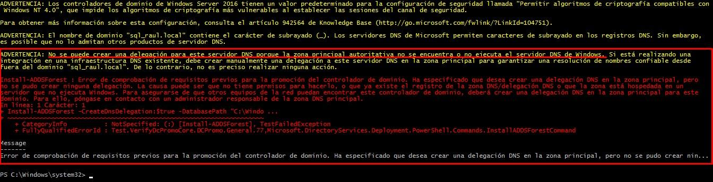Ha mostrado unas advertencias y luego ha dado un error. ¿Por qué ha sucedido esto? Si hemos instalado el servidor DNS antes de configurar el servicio de Active Directory, dará este error por qué no ha creado una zona principal para el dominio (seguramente la zona inversa del dominio). Podemos hacer donde pone -CreateDnsDelegation:$true, lo ponemos a $false para que no cree la delegación y la crearemos a mano.
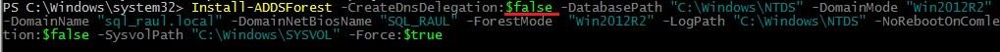Si no hemos instalado DNS antes de instalar los servicios de Active Directory, en el comando podemos agregar el siguiente parámetro -InstallDNS:$true para que instale el servidor DNS.
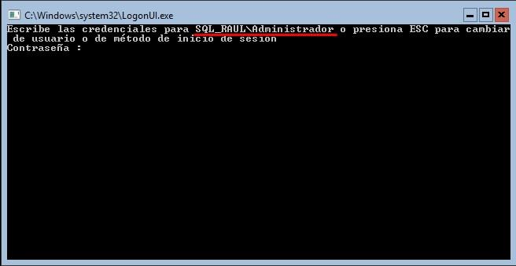Cuando se termine de instalar y configurar Active Directory, es recomendable reiniciar el servidor para autenticarnos con el dominio del Active Directory.
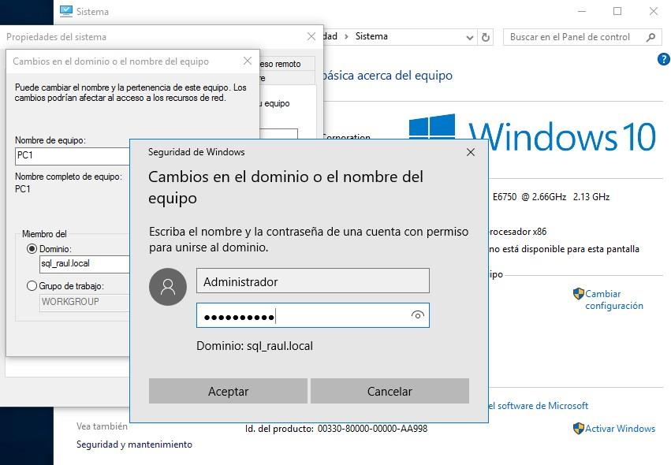En los equipos Windows 10 que van a estar unidos, los unimos al Active Directory yendo a Panel de control Sistema Cambiar configuración Cambiar nombre. Cambiamos el nombre del equipo para identificarlo bien y en dominio ponemos el nombre del dominio que hemos puesto. Pedirá el nombre del usuario que tenga permisos de administrador de ese dominio y reiniciamos ese equipo con Windows 10 para iniciar sesión con los usuarios del Active Directory.
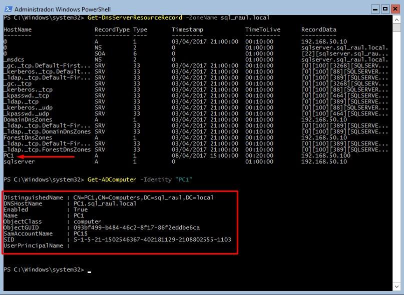Para ver si de verdad se ha unido podemos verlo desde el servidor DNS con el comando cmdlet Get-DnsServerResourceRecord -ZoneName [Nombre del Dominio].
Si queremos verlo desde Active Directory y con más información usamos el comando cmdlet Get-ADComputer -Identity [Nombre del host].
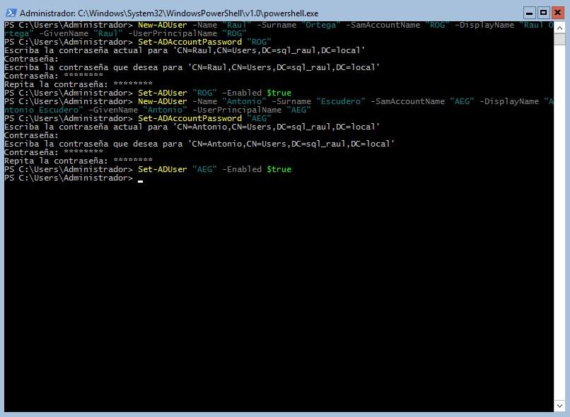Para crear nuevos usuarios de Active Directory, usamos el comando cmdlet:
New-ADUser
-Name “Raul”. Nombre del usuario.
-Surname “Ortega”. Apellidos del usuario.
-SamAccountName “ROG”. Nombre del usuario para iniciar sesión.
-DisplayName “Raul Ortega”. Nombre que saldrá como nombre del usuario.
-GivenName “Raul”. Que sea igual que el nombre real del usuario.
-UserPrincipalName “ROG”. Nombre principal del usuario.
Una vez hecho esto, debemos ponerle una contraseña. Usamos el comando cmdlet Set-ADAccountPasswrod [Nombre del usuario SamAccountName].
Una vez puesta, debemos habilitar el usuario con el comando cmdlet Set-ADUser [Nombre del usuario SamAccuntName] -Enabled $true.
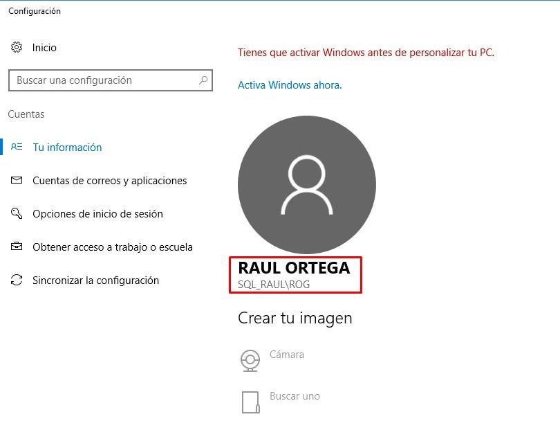Ingresamos con el usuario ROG si accede a un equipo unido al dominio.
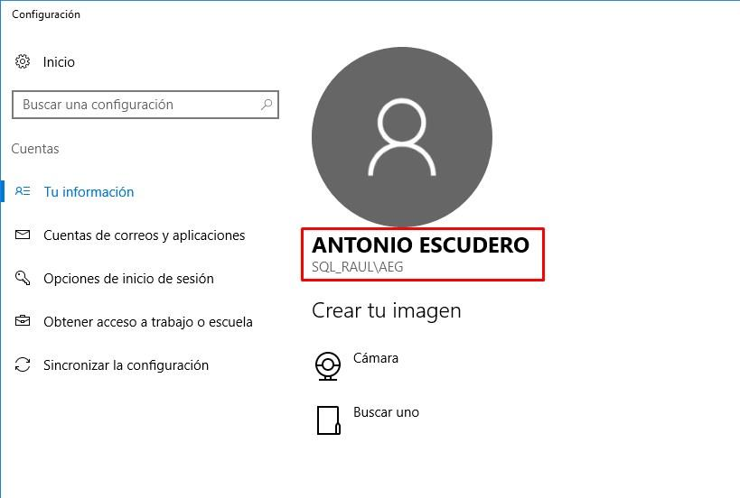Ingresamos con el usuario AEG si accede a un equipo unido al dominio.
Instalación de IIS Server y Powershell Administration Web Server
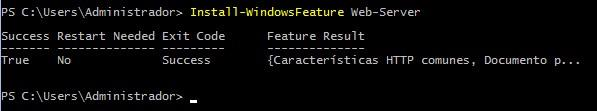Instalamos IIS con el comando cmdlet Install-WindowsFeature Web-Server.
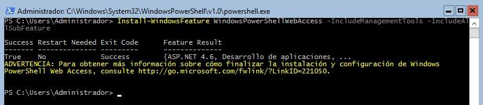Instalamos PowershellWebAccess con el comando cmdlet Install-WindowsFeature WindowsPowershellWebAccess, incluyendo los –IncludeManagementTools y –IncludeAllSubFeature
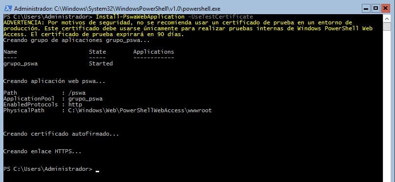Instalamos un certificado de prueba, pues para entrar en PowerShell Web Access se necesita que esté cifrado. Usamos el comando Install-PswaWebApplication –UseTestCertificate.
Creamos una regla para el usuario Administrador pueda acceder por la interfaz web de PowerShell.
Usamos el comando:
Add-PswaAuthorizationRule
-UserName “sql_raul.local\Administrador” nombre de usuario que permitimos el acceso a la interfaz web
-ComputerName “SQLSERVER.sql_raul.local” nombre del equipo al que podrá acceder el usuario por la interfaz web.
-ConfigurationName Micrososft.PowerShell Esto no se debe cambiar.
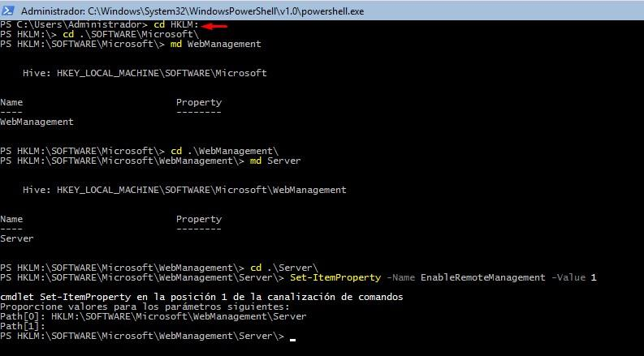Ahora un paso importante. Debemos de acceder al registro bien por regedit.exe o por PowerShell. Accedemos a la carpeta del registro >HKEY_LOCAL_MACHINE (HLM:). Vamos ahora a la ruta HKLM\SOFTWARE\Microsoft. Si no está la carpeta WebManagement, la creamos. Dentro de la carpeta WebManagement debe estar la carpeta Server, sino, la creamos. La ruta debe ser la siguiente:
HKLM:\SOFTWARE\Microsoft\WebManagement\Server
Dentro de esa ruta creamos una clave de registro con el comando cmdlet Set-ItemProperty con el parámentro –Name y el nombre EnableRemoteManagement y el parámetro –Value en 1.
Indicamos la ruta que se guardará esa clave, la ruta dicha anteriormente.
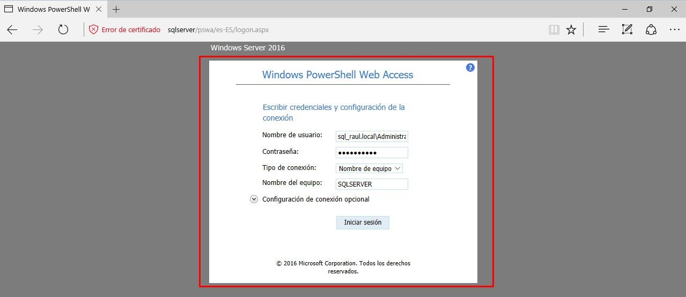Vamos a un cliente Windows 10 y podemos ir al servicio Windows PowerShell Web Access en la dirección URL sqlserver/pswa si estamos en local.
Escribimos el nombre del usuario (sql_raul.local\Administrador), la contraseña, tipo de conexión (Nombre de equipo) y el nombre del equipo (SQLSERVER).
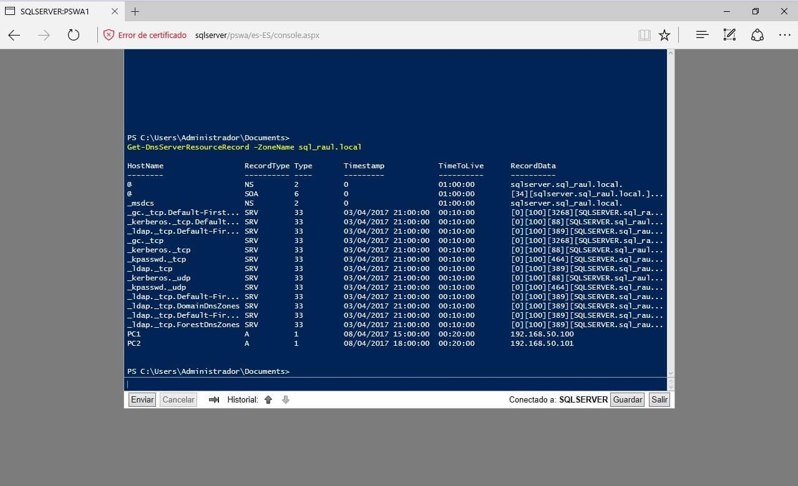Iniciamos sesión y vemos que tenemos PowerShell a través del navegador Web.
6.3. Monitorización de Windows Server 2016
La monitorización en Windows Server 2016 modo Core, podemos abrir el administrador de tareas con los atajos del teclado Ctrl+Shift+Esc.
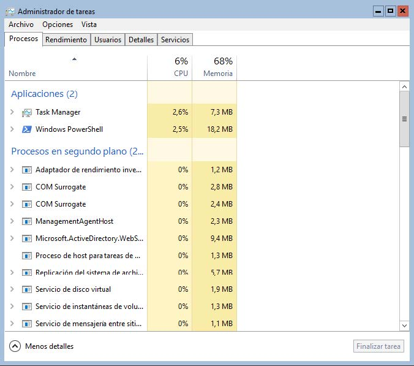Podemos ver los procesos que más consumen en el servidor.
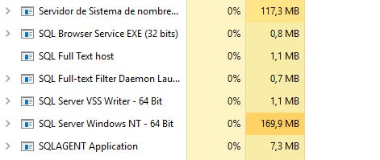Desde la pestaña Servicios, podemos ver los servicios del sistema y de SQL Server. Si el proceso MSSQLSERVER está detenido al iniciar, clic derecho y lo iniciamos. Podemos para el proceso SQLTelemetry ya que sirve para telemetría.
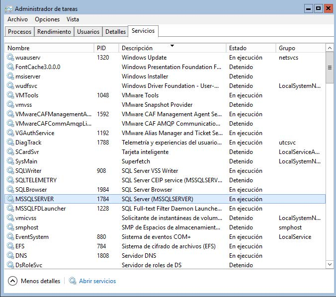7. Servidor SQL Server 2016
7.1. Instalación de SQL Server 2016 y configuración dentro de la instalación
Antes de la instalación, he instalado SQL Server en modo gráfico para sacar el fichero de configuración de instalación para el modo comando y tenerlo configurado cuando se instale.
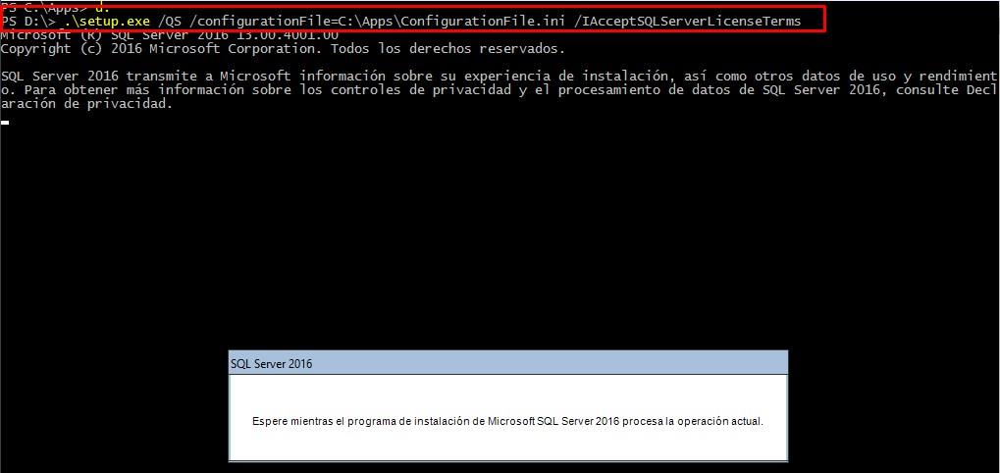Ejecutamos el setup.exe del CD de SQL Server 2016. Para ejecutarlo tendremos que ejecutar el setup.exe con los parámetros /QS /ConfigurationFile=”nombre del archivo de configuración de la instalación” y /IAcceptSQLServerLicenseTerms para aceptar los términos de licencia de SQL Server.
El archivo de configuración contiene lo siguiente (pondré los más importantes):
- ACTION=INSTALL. Especifica un flujo de trabajo de instalación, como INSTALL, UNINSTALL o UPGRADE. Es un parámetro necesario. INSTALL para instalar.
- ENU="False". Use el parámetro /ENU para instalar la versión en inglés de SQL Server en el sistema operativo Windows traducido. Ponemos False para instalarlo con el idioma que este puesto Windows.
- FEATURES=SQLENGINE,FULLTEXT,CONN. Especifica las características que se van a instalar, desinstalar o actualizar. La lista de las características de nivel superior incluye SQL, AS, RS, IS, MDS y Herramientas. La característica SQL instalará el motor de base de datos, la replicación, el texto completo y el servidor de Data Quality Services (DQS). La característica Herramientas instalará los componentes compartidos. Solamente vamos a necesitar SQLENGINE (motor de base de datos), FULLTEXT (Extracciones de texto completo y semánticas de búsqueda) y CONN (conectividad con herramientas de cliente).
- INSTANCENAME="MSSQLSERVER". Especifique una instancia predeterminada o con nombre. MSSQLSERVER y SQLExpress son las instancias predeterminadas de las ediciones que no son Express y de las Express, respectivamente. Se requiere este parámetro al instalar el motor de base de datos de SQL Server (SQL), Analysis Services (AS) o Reporting Services (RS). Por defecto es MSSQLSERVER.
- INSTANCEID="MSSQLSERVER". Especifique el identificador de instancia de las características de SQL Server que ha indicado. Las estructuras de directorios y del Registro, así como los nombres de los servicios SQL Server incorporarán el identificador de instancia de SQL Server. Por defecto tiene que ser igual que el parámetro INSTANCENAME.
- AGTSVCACCOUNT="NT Service\SQLSERVERAGENT". Nombre de cuenta del Agente. Por defecto NT Service\SQLSERVERAGENT.
- AGTSVCSTARTUPTYPE="Automatic". Iniciar servicio automáticamente después de la instalación. Ponemos en automático.
- SQLSVCSTARTUPTYPE="Automatic". Tipo de inicio para el servicio SQL Server. Ponemos en automático.
- SQLSVCACCOUNT="NT Service\MSSQLSERVER". Cuenta para el servicio de SQL Server: Dominio\Usuario o cuenta de sistema. Por defecto usaremos uno del sistema NT Service\MSSQLSERVER.
- SQLSYSADMINACCOUNTS="SQL_RAUL\Administrador". Cuentas de Windows que se suministran como administradores del sistema de SQL Server. La cuenta de usuario del Administrador del servidor.
- SECURITYMODE="SQL". Autenticación de Windows predeterminada. Use "SQL" para el modo mixto de autenticación de Windows. Usamos SQL para habilitar el modo mixto.
- SAPWD="Inves-1234". Contraseña para el usuario administrador de SQL (sa). Ponemos la contraseña que contendrá el usuario sa de SQL Server.
- TCPENABLED="1". Especifique 0 para deshabilitar el protocolo TCP/IP, o 1 para habilitarlo. Usamos el 1 para habilitar TCP.
- BROWSERSVCSTARTUPTYPE="Automatic". Tipo de inicio para el servicio SQL Server Browser. Ponemos en automático.
Vemos que se prepara para instalar. Tardará con las características puestas, unos 10 – 15 minutos, dependiendo de la características del servidor y si hemos puesto más características para SQL Server.
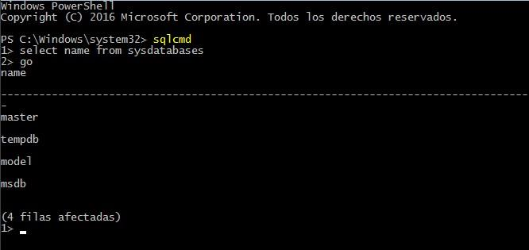Una vez instalado usamos en comando sqlcmd para comprobar que funciona.
7.2. Código de base de datos
Vamos a ver las diferencias entre SQL Server y MySQL de la base de datos de la inmobiliaria. La base de datos de la inmobiliaria consiste en:
Que permita guardar los administradores que administran el sitio de la inmobiliaria, los empleados puedan poner en venta o en alquiler los inmuebles y los clientes puedan acceder a esa venta de inmuebles.
Lo inmuebles tiene distintos tipos: Casas, Pisos, Locales y Garajes. Los garajes pueden estar o no unidos a las casas o pisos. Los garajes pueden estar solos independientemente sin las casas y los pisos para ponerse en venta o alquiler. Los locales no pueden tener garajes puestos (la inmobiliaria venden o alquilan los locales con garaje propio). Los pisos se diferencian por dos atributos, planta y puerta de ese piso.
Una inmobiliaria puede tener más de dos imágenes puestas en el mismo inmueble.
Los empleados serán los agentes de los alquileres de esos inmuebles y ellos contenderán cuantos pagos recibe ese mismo alquiler.
Las compras guardaran el valor y la fecha cuando se creó ese inmueble en venta.
Dicho esto, veremos las diferencias del código entre SQL Server y MySQL.
SQL Server
Para ver las base de datos en SQL Server.
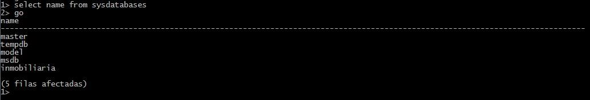Para ver las tablas de la inmobiliaria en SQL Server.
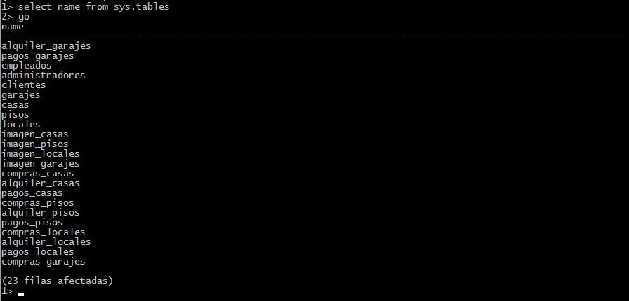MySQL
Para ver las base de datos en MySQL.
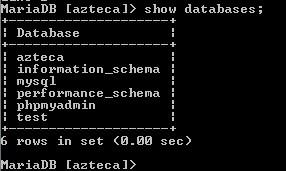Para ver las tablas de la inmobiliaria en MySQL.
7.2.1. Tablas
SQL Server
MySQL
Para que los IDs se autoincrementen, se usa la función IDENTITY(1,1) el primer valor debe ser 1, para que empiece por el 1 y el segundo valor lo que se va a incrementar, si es 1 pues sería 1,2,3,4… si es 2 pues 1,3,5,7,9… En SQL Server no se puede poner un ancho de columna para los valores INT, en MySQL sí.
7.2.2. Usuarios
SQL Server
MySQL

Para crear usuarios, se utiliza el CREATE LOGIN “nombre usuario” y si queremos añadir contraseña ponemos a continuación WITH PASSWORD = “contraseña”.
En MySQL se pude utilizar CREATE USER para crear un usuario o con el propio GRANT puede crear el usuario si ponemos después IDENTIFIED BY “contraseña” para añadirle la contraseña.
7.2.3. Procedimientos
SQL Server
Procedimiento impuesto_pago
Procedimiento impuesto_compra
MySQL
rocedimiento impuesto_pago
Procedimiento impuesto_compra
7.2.4. Funciones
SQL Server
Función sumatodopagos
Función sumatodocompras

Función sumatodo
MySQL
Función sumatodopagos
Función sumatodocompras
Función sumatodo
7.2.5. Cursores
SQL Server
Cursor para ver el alquiler que más paga en casas

Cursor para ver el alquiler que más paga en pisos
Cursor para ver el alquiler que más paga en locales
Cursor para ver el alquiler que más paga en garajes
MySQL
Cursor para ver el alquiler que más paga en casas
Cursor para ver el alquiler que más paga en pisos
Cursor para ver el alquiler que más paga en locales
Cursor para ver el alquiler que más paga en garajes
7.3. PHP en SQL Server
Como primer paso, vamos a explicar de qué va la página web para la inmobiliaria, después veremos cómo instalar la versión PHP 7 en Windows Server 2016 con IIS 10.0 y el Driver PHP para SQL Server y por último las diferencias entre SQL Server y MySQL con PHP.
Explicación de la página web.
La página index es esta de aquí.

Tiene Inicio que va a la página de inicio (index.php), Inicia sesión (iniciar_sesion.php) para iniciar sesión con los usuarios de administración, empleados y clientes y Registrate (registro.php) para que un cliente se registre en la página. Vamos a ver la página de registro.
En este registro, estos datos se guardarán en la tabla clientes. El registro se valida con Javascript.
Cuando se registre, puede iniciar sesión.

Se introduce el usuario y contraseña. Como está dentro de un <form> que method POST, cuando le demos a iniciar sesión, comprobará el usuario en un archivo llamado comprobarsesion.php
Como hay tres niveles de usuarios, que están separados en distintas tablas, comprobará el usuario y contraseña introducidos en esas tres tablas. Si el usuario y contraseña no sale ningún resultado de esas tres consultas como se muestra en el archivo, mostrará que usuario y/o contraseña son incorrectos.
Sitio del administrador
El administrador del sitio podrá:
- Empleados
- Ver empleados
- Crear empleados
- Modificar empleados
- Borrar empleados
- Cambiar contraseña a los empleados
- Clientes
- Ver clientes
- Crear clientes
- Modificar clientes
- Borrar clientes
- Cambiar contraseña a los clientes
Ver empleados (empleados.php)
Una página que muestra la tabla empleados.
Crear empleados (crear_empleado.php)
Un formulario para ingresar datos del nuevo empleado. El formulario es casi idéntico que al de registro del cliente. Se valida con javascript e ingresa los datos en la tabla empleados.
Modificar empleados (modificar_empleado.php)
Selecciona el empleado y dar en modificar.
Cambiamos los valores que queremos cambiar. El ID se muestra, pero no se puede editar. Damos en modificar.
El archivo mod_empleados.php es el encargado de actualizar el registro en la tabla empleados. Vemos que lo ha modificado

Borrar empleados (borrar_empleado.php)
Seleccionamos el empleado que queremos borrar. El archivo bor_emp.php es el encargado de borrar el empleado seleccionado.
Cambiar contraseñas (cambiar_contra_empleado.php)
Seleccionamos el empleado que queremos cambiar la contraseña e introducimos la nueva contraseña. El archivo pass_emp.php es el encargado de cambiar la contraseña del empleado.
Cerrar sesión (cerrar_sesion.php)
Iniciamos session_start() y borramos las variables de sesión de administración y el de seguridad. Y lo envío a la página principal.
Para clientes es lo mismo que los empleados, sigue el mismo metodo, pero los archivos .php son todos terminados en cliente/s.
Sitio del Empleado
En el sitio del empleado, podrá hacer:
- Casas
- Ver las casas
- Crear casas
- Modificar casas
- Borrar casas
- Pisos
- Ver los pisos
- Crear pisos
- Modificar pisos
- Borrar pisos
- Locales
- Ver los locales
- Crear locales
- Modificar locales
- Borrar locales
- Garajes
- Ver los garajes
- Crear garajes
- Modificar garajes
- Borrar garajes
Cuando una casa, piso, local o garaje, podrán hacer:
- Añadir imágenes a esos inmuebles.
- Poner en venta el inmueble o poner en alquiler el inmueble.
- Para los garajes, pueden ponerse en venta o alquiler, pero no se podrá poner en venta o en alquiler si es un garaje para una casa o piso.
Ver inmuebles (casas.php, pisos.php, locales.php, garajes.php)
Solamente es una tabla que muestra la primera imagen del inmueble y sus datos de la tabla casas, pisos, locales, garajes.
Casas
Pisos
Locales
Garajes
Crear inmuebles (crear_casa.php, crear_piso.php, crear_local.php, crear_garaje.php)
Un formulario para introducir los datos del nuevo inmueble. Las casas, pisos, locales y garajes, pueden tener diferentes tipos de datos.
Cuando se introduce los datos, saldrá otro formulario para subir las imágenes del inmueble. Se da ha enviar, dirá que el inmueble está creado y pedirá si queremos ponerlo en venta o en alquiler.
Si queremos ponerlo en venta pondremos el valor del inmueble. Para alquileres se pondrá automáticamente en alquiler.
Los archivos compra_*.php Son los encargados de poner en venta el inmueble.
Los archivos alquiler_*.php Son los encargados de poner en alquiler el inmueble.
Las subidas de imágenes lo hacen los archivos subir_imagen_*.php
Para garajes es distinto, tendremos en vez de dos opciones (En venta o alquiler) tendremos (En venta o alquiler o unir el garaje a una casa o piso). Los archivos que hacen eso son agregar_garaje_casa.php y agregar_garaje_piso.php.
Modificar inmuebles (modificar_casas.php, modificar_pisos.php, modificar_locales.php, modificar_garajes.php)
Hace la misma operación como el de modificar los empleados pero con los inmuebles.
Los archivos que hacen actualizar los datos de los inmuebles son mod_casa.php, mod_piso.php, mod_local.php, mod_garaje.php.
Borrar inmueble (borrar_casa.php, borrar_piso.php, borrar_local.php, borrar_garaje.php)
Estos archivos muestran los inmuebles y un boto de borrar. Se puede seleccionar más de uno para borrar.
Cuando le demos a borrar, Se borrará ese inmueble. No pasa nada por las tablas azteca.compras_*, azteca.alquiler_* y azteca.imagen_* ya que están unidas con una clave foránea que se actualiza cuando se borra o se actualiza la tabla principal, haciendo que estas se borren o se actualicen automáticamente.
Los archivos que borran los inmuebles son bc.php, bp.php, bl.php y bg.php.
Todos los archivos que lo hacen posible.
Sitio del cliente
El cliente cuando inicie sesión, podrá ver las casas con garaje incluido en venta y en alquiler, casas sin garaje incluido en venta y en alquiler, pisos con garaje incluido en venta y en alquiler, pisos sin garaje incluido en venta y en alquiler, locales en venta y en alquiler y garajes en venta y en alquiler.
Archivos que lo hacen posible.
Ejemplos:
En la carpeta js, se guardar los javascripts de las validaciones de los formularios.
En la carpeta conexión, se encuentra el fichero conexión.php que hace conectarse a la base de datos. En la carpeta css se guardan los estilos de la página de Azteca.
Instalación de PHP 7 en Windows Server 2016 y el driver PHP para SQL Server
Instalamos el componente CGI, es necesario para que PHP funcione en IIS.

Descargamos la herramienta Instalador de plataforma web 5.0 https://www.microsoft.com/web/downloads/platform.aspx para descargar el PHP 7.0.15 (x64). Importante que sea 64 bits porque SQL Server está solamente en 64 bits.
Si falla la instalación de PHP 7.0.15 sin IIS Express, instalar el de IIS Express. Descargamos el Driver de PHP para SQL Server https://www.microsoft.com/en-us/download/details.aspx?id=20098. Descargamos el SQLSRV40.EXE para PHP 7.
Necesitaremos solo estos dos archivos.
Lo dejamos en la carpeta php/extensions que estará en la carpeta C:\Archivos de Programa\IIS express y editamos el archivo php.ini.

Añadimos los .dll de los drivers PHP para SQL Server. Probamos con nuestra página web de Azteca, ya que esta en .php, para ver si se muestra correctamente.
Diferencias de código entre SQL Server y MySQL en PHP
En este documento pondré las que más se diferencias, hay procedimientos iguales como en otros archivos.
Vamos a empezar por la conexión con la base de datos. El archivo es conexion/conexión.php
SQL Server
MySQL
Registro del cliente (registro.php)
SQL Server
MySQL
No cambia mucho, solamente en vez de ser mysqli_query es sqlsrv_query. Pero en la consulta para cifrar la contraseña que nos pasa por el formulario, en MySQL usamos la función MD5(). En SQL Server debemos de usar la función HASHBYTES(‘MD5’, “la contraseña que pasemos por el $_POST”), pero debemos de convertirlo, porque si lo usamos así, se verá esto.
Usamos la función CONVERT() para sacar el HASH de MD5. Saldrá así.
Comprobar la sesión de los usuarios (comprobarsesion.php)
SQL Server
MySQL
Primer cambio realizado e importante. Si en sqlsrv_query, no ponemos las opciones $param=array(), $options=array(“Scrollable” => “static”) saldrá un error en el ODBC de SQL Server (para ver los errores de sqlsrv, debemos poner print_r(sqlsrv_errors())). Este es el error.
Podemos poner el Scrollable en “static”, “keyset” o en “buffered”.
En mysqli_num_rows se cambia por sqlsrv_num_rows.
En mysqli puede funcionar con usar PDO, pero en sqlsrv no. Usamos sqlsrv para todo.
Los mysqli_fecth_array y mysqli_fecth_assoc, el primero es el por defecto del fetch y el otro es para decir que los array son asociativos. Para sqlsrv se debe usar la función sqlsrv_fetch_array y después de la consulta realizada, escribimos SQLSRV_FETCH_ASSOC para decir que es un array asociativo, SQLSRV_FETCH_NUMERIC que es un array numérico o SQLSRV_FETCH_BOTH (por defecto). También la función sqlsrv_fetch_array se puede definir más cosas.
Sitio de la administración. Los empleados y clientes tienen los mismos cambios pero con diferente tabla.
Empleados – Clientes
SQL Server
MySQL
Borrar empleados – Borras clientes
SQL Server
MySQL
Sitio del empleado – Las casas, pisos, locales y garajes con exactamente igual, pero puede diferenciar por tener más valores en unas tablas que otras.
Casas - Pisos – Locales – Garajes
SQL Server
MySQL
Compras casas – pisos – locales – garajes
SQL Server
MySQL
Alquiler casas – pisos – locales – garajes
SQL Server
MySQL
7.4. Copias de seguridad de SQL Server 2016
Por Transact-SQL
Se usa el BACKUP DATABASE “nombre de la base de datos” y luego la ruta que se guardará la copia de seguridad. La copia de seguridad tiene que ser con la extensión .bak
Por PowerShell

Con PowerShell se usa el comando cmdlet Backup-SqlDatabase –ServerInstance “Servidor y el nombre de la instancia” –Database “nombre de la base de datos” –BackupAction como quiero guardar la base de datos entera, poenmos Database
Mediante un cursor almacenado
Con este curso lo que se hace que puedas hacer copias de más de una base de datos. Podemos inluir la que queramos, como en la imagen puesta, se hará una copia del master e inmobiliaria pero no la base de datos model, msdb y tempdb.
La copias se guardará con el nombre EJ: inmobiliaria_20170613.bak
8. Posibles actualizaciones
Introducción a SQL Server Management Studio. Este programa, que usar el núcleo de Visual Studio, es una herramienta gráfica para administrar SQL Server 2016, permitiendo comodidad al cambiar la configuración del servidor de base de datos, tanto el uso para diseñar scripts SQL.
Servidor de replicación de SQL Server. Instalación del servicio de replicación en un servidor de replicación SQL Server 2016 y comprobar su funcionamiento.
9. Costes
Si solamente contamos el coste del software de SQL Server 2016, Windows Server 2016 Standard y Windows 10 Pro, este sería su precio.
SQL Server 2016 Standard Edition
4.124,00 €
Windows 10 Pro

279,00 €
Windows Server 2016 Standard – Licencia de acceso 10 clientes
1.790,00 €
Total: 6.193,00 €
10. Resumen y conclusiones
Mirando todo lo procesado, si es montar solamente un página web sencilla, elijo más MySQL por su rapidez, pero si es una página web que tiene que cambiar datos, como una página web que nos muestra todos los productos de una tienda, prefiero la gestión que nos da SQL Server.
Los dos sistemas de gestores de base de datos están bastante bien, pero MySQL es más fácil de usar y es mucho más rápido que SQL Server, pero SQL Server gana que darte herramientas de administración de datos, una consola (Transact-SQL) mucho mejor que la consola de MySQL. Te dice todos los errores que tienes al ejecutar al crear una función por ejemplo, en MySQL cuando ve un error, corta la ejecución. En T-SQL puedes ejecutar varias consultas a la vez, en MySQL no.
En MySQL gana en:
- Rapidez.
- Sencillez.
- Come pocos recursos del servidor.
En SQL Server gana en:
- Herramientas administrativas mejores.
- Permite ejecutar procedimientos o funciones creadas antes de almacenarlas.
No es tan complicado en crear un cursor, función y procedimientos que en MySQL. Si alguien viene de Visual Basic, no tendrá problemas en crear funciones o procedimientos. Me gustan los dos, elegiría uno dependiendo de qué va a ser mejor.
11. Bibliografía y documentación
Aquí tenéis toda la bibliografía sacada.
Documentación de SQL Server Transact-SQL: https://msdn.microsoft.com/es-es/library/bb510741.aspx
Documentación de SQL Server para PHP: http://php.net/manual/es/book.sqlsrv.php y https://docs.microsoft.com/en-us/sql/connect/php/microsoft-php-driver-for-sql-server
Documentación de Windows PowerShell para Windows Server: https://technet.microsoft.com/es-es/itpro/powershell/windows/index
Gracias a la comunidad de StackOverflow: https://stackoverflow.com/
ÍNDICE
- Introducción
- Planificación
- Requisitos previos
- Plan del contenido
- Diagrama de la base de datos
- Servidor Windows Server 2016
- Instalación de Windows Server 2016
- Configuración de Windows Server 2016
- Monitorización de Windows Server 2016
- Servidor SQL Server 2016
- Instalación de SQL Server 2016 y configuración dentro de la instalación
- Código de base de datos
- PHP en SQL Server
- Copias de seguridad de SQL Server 2016
- Posibles actualizaciones
- Costes
- Resumen y conclusiones
- Bibliografía y documentación